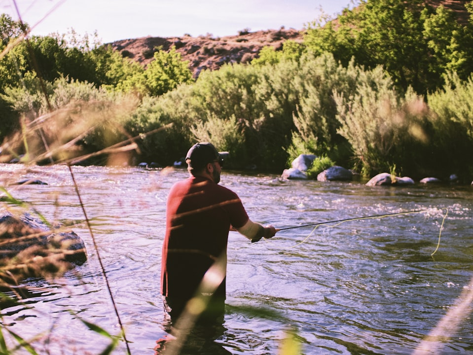
Bass Fishing: Topwater vs Jig on the Ottawa River
Deep dive comparing topwater and jig techniques for bass on the Ottawa River's shallow structure zones....
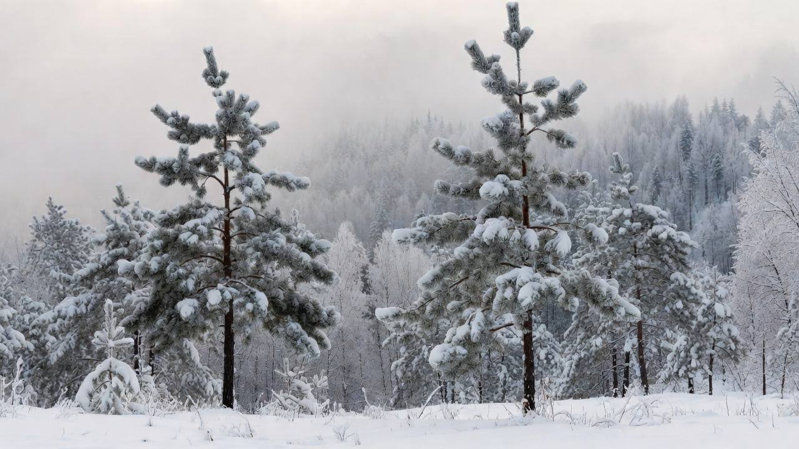
Ice Fishing for Walleye on 31-Mile Lake
Proven ice fishing strategies for walleye on Lac des Trente-et-Un-Milles, including shelter placement and jigging patterns....

The Exact Setup for Brook Trout in Spring Streams
Rod, reel, line, lure — the precise setup for spring brook trout in Outaouais streams....
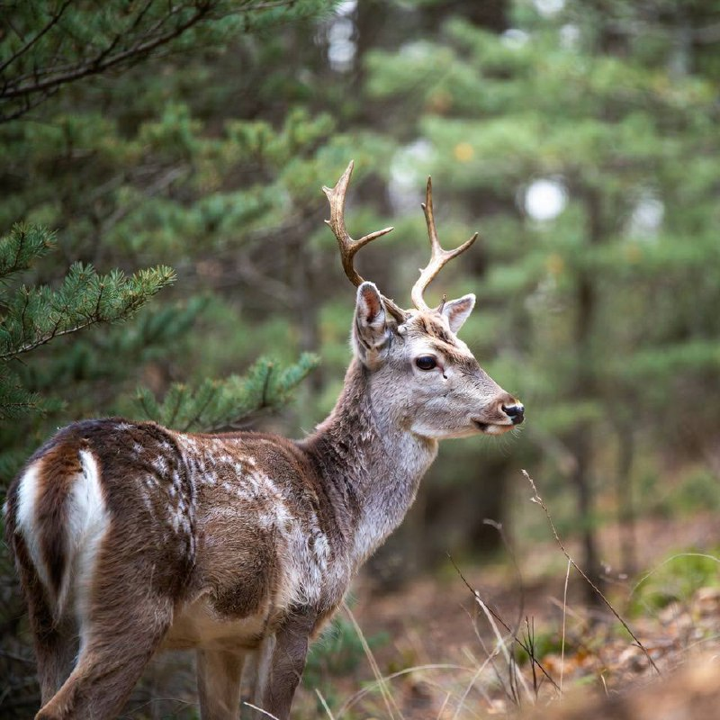
4 Gatineau River Hotspots for August Walleye
Four proven spots on the Gatineau River where walleye stay active through the heat of August....
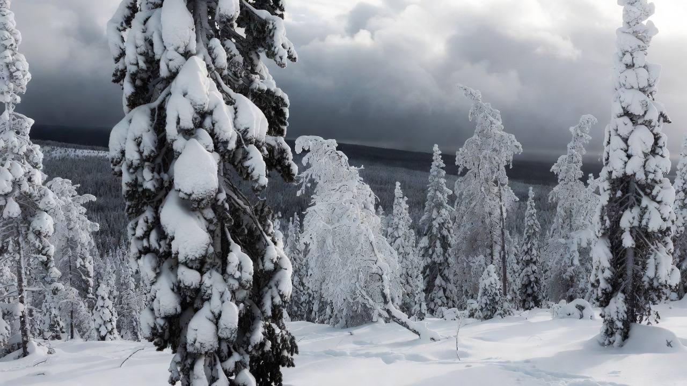
Golden Hour Kayaking: 3 Bays of Poisson Blanc Reservoir
Discover the best sunset kayak routes on Poisson Blanc Reservoir for pike fishing and nature photography....
Top 5 Public Boat Launches in Outaouais
The best public boat launches in the Outaouais region, with parking info and seasonal conditions....
Partridge Hunting Without a Dog: 5 Strategies
A tactical guide to solo partridge hunting in Ontario and Quebec forests, featuring proven scouting methods for October bird season....

5 Errors That Spook Moose During the Rut Call
Common mistakes that send bull moose running during pre-rut calling season in the Haute-Gatineau region....
First Deer Guide: Zone 10 vs Zone 11
Everything you need to know for your first deer hunt in the Outaouais — zone comparison, gear, and strategy....
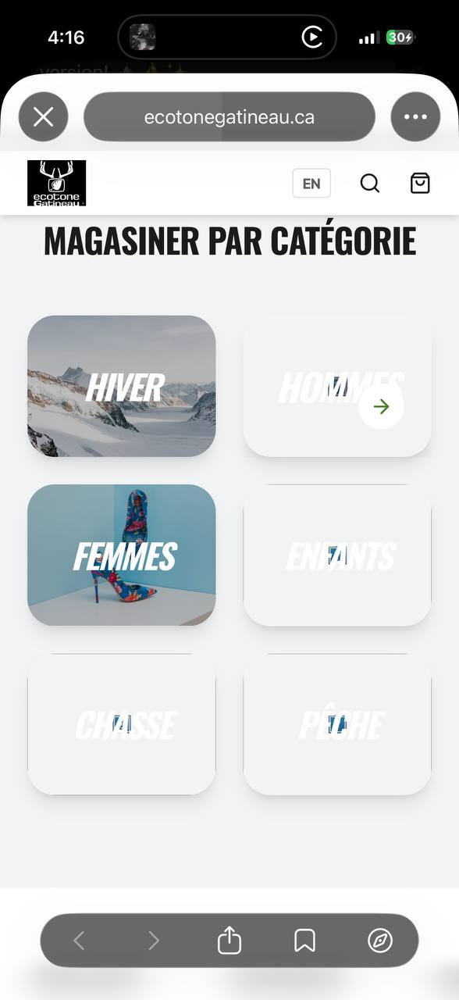
My -15°C Hunting Pack: Every Item Explained
A complete breakdown of what to pack for a full day of cold-weather hunting in Canadian forests....
10 Best Backcountry Sites in Algonquin Park
Our hand-picked selection of interior canoe-in campsites in Algonquin, from beginner-friendly to remote expedition sites....

Winter Camping in Canada: The Complete Gear Guide
Everything you need to stay warm, dry, and safe during a Canadian winter camping trip, from -20°C sleeping bags to hot tent setups....
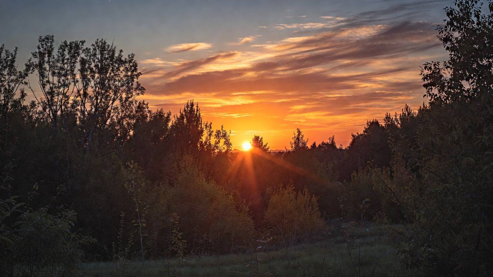
Family Camping: 5 Kid-Friendly Parks Across Canada
From PEI's beaches to BC's rainforests — the best campgrounds for families with young children....

Beginner's Guide to Kayaking in Ontario
Flatwater lakes, gear rental, and safety tips for your first paddling season in Ontario....

Whitewater Safety: 7 Rules That Save Lives
Essential safety protocols for whitewater kayaking in Canada — from PFD selection to reading rapids....
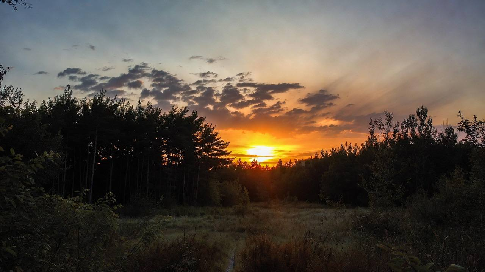
Sea Kayaking the Nova Scotia Coast
Paddle past lighthouses, sea caves, and whale pods along Nova Scotia's rugged Atlantic coastline....
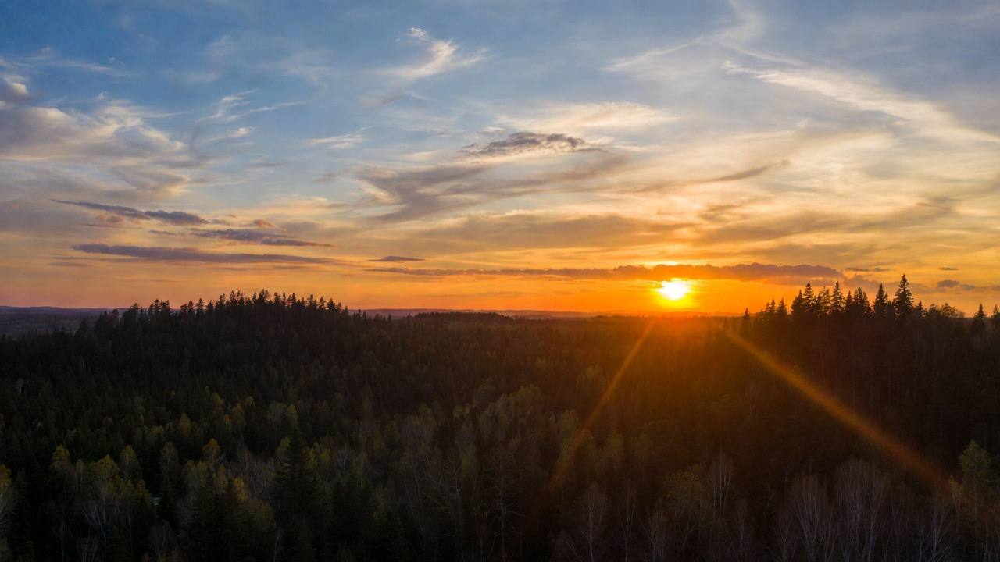
Chasing Powder: When to Hit BC's Best Resorts
Month-by-month breakdown of powder conditions at Whistler, Revelstoke, Fernie, and more....
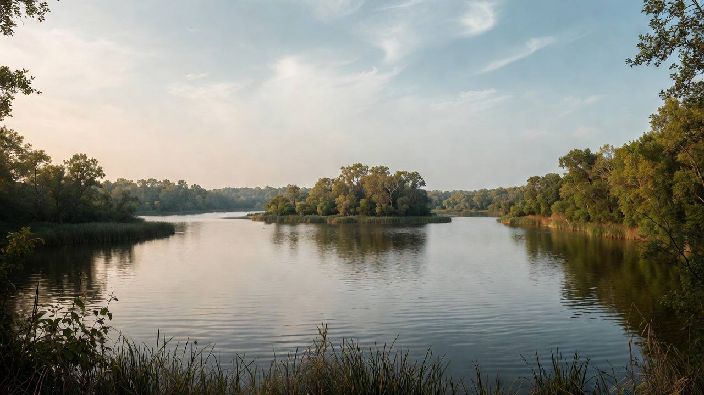
Cross-Country Skiing in Quebec: Top 5 Trail Networks
From Gatineau Park to Mont-Sainte-Anne — Quebec's best groomed trail systems for Nordic skiing....
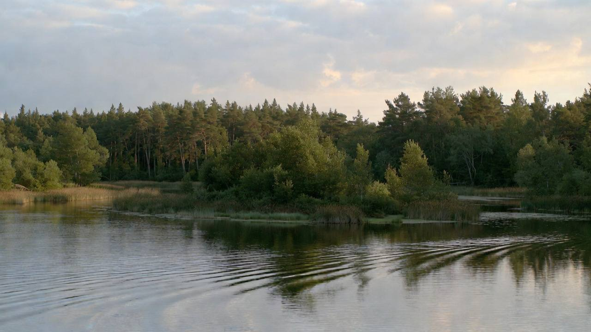
Backcountry Skiing Safety: Avalanche Awareness 101
Essential avalanche safety knowledge for backcountry skiing in the Canadian Rockies and Coast Mountains....

12 Best Day Hikes in the Canadian Rockies
From Lake Louise to Jasper — jaw-dropping day hikes for all skill levels in the Rocky Mountains....

The Ultimate Canadian Hiking Gear Checklist
Season-by-season gear checklist for day hikes and multi-day treks across Canadian trails....
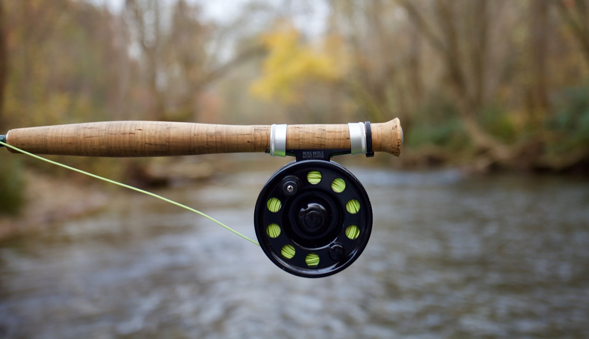
Newfoundland's East Coast Trail: A Complete Guide
336 km of coastal hiking through icebergs, whales, and sea stacks — everything you need to plan your ECT adventure....
The Best Hunting Boots for Canadian Winters: 8 Pairs Tested to -40°C
After three seasons of frozen toes and soaked socks, we tested 8 winter hunting boots in real Canadian conditions down to -40°C....
Ice Fishing Shelters: Hub vs. Flip-Over vs. Cabin Style (2026 Guide)
Three winters, 47 days on the ice — everything you need to know about choosing the right ice fishing shelter for Canadian conditions....
Kayak vs. Canoe for Canadian Lakes: Which Should You Buy?
After paddling 200+ km of Ontario waterways in both vessels, here's the honest comparison to help you decide....
The 7 Best Base Layers for Cold Weather Hunting (Merino vs. Synthetic)
The wrong base layer will ruin your hunt faster than a missed shot. After testing dozens of systems across three Canadian winters....
Camping Mattresses: Air vs. Foam vs. Self-Inflating (Comfort Rankings)
After 100+ nights testing camping mattresses across Ontario's provincial parks, sleep quality directly impacts adventure quality....
The Best Fishing Rods for Walleye: 6 Setups from Budget to Premium
After 15 years chasing walleye across Ontario and Quebec, the right rod makes the difference between a limit and a skunk....
Headlamps for Hunters: Red Light vs. White Light (and 5 Best Options)
Your headlamp is the only piece of gear you'll use on every single hunt. Red light vs white light science and 5 top picks....
How to Layer for Ice Fishing: A System That Actually Keeps You Warm
After 50+ days on the ice across Ontario and Quebec, a layering system dialed in from -5°C to -35°C....
Why Your Rain Gear Fails (And the 3 Jackets That Actually Keep You Dry)
After 15 years of hunting and fishing in Canadian weather, most 'waterproof' gear is lying to you. Here are the 3 that work....
The Truth About Cheap Binoculars (And 4 Affordable Options That Don't Suck)
Find quality hunting binoculars in the $150–300 range that deliver excellent optical performance without breaking the bank....

Camp Stoves: Canister vs. Liquid Fuel vs. Wood (Field Tested in -20°C)
Compare canister, liquid fuel, and wood stoves for winter camping with real-world cold weather testing results....
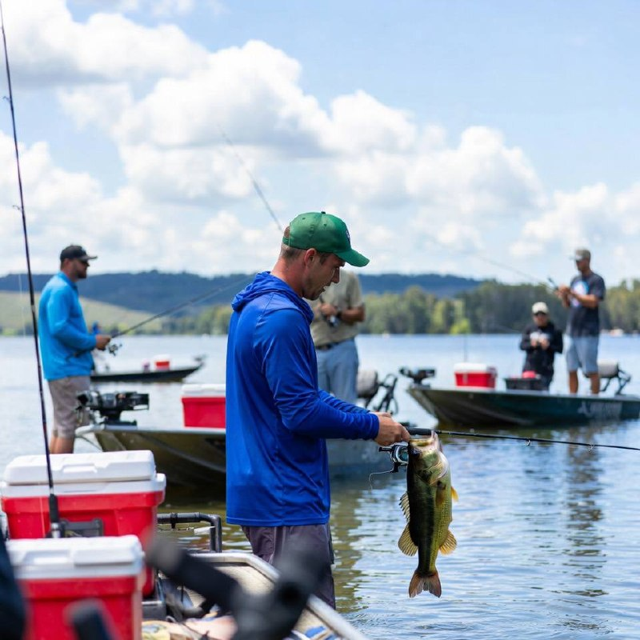
Spring Turkey Hunting Gear: The 10 Essentials (Plus Nice-to-Haves)
Complete checklist of 10 essential items for spring turkey hunting success, from shotguns to calls to camouflage....
Fall Fishing: Transition Gear That Actually Works (Water Temperature Guide)
Adapt your fishing gear and techniques for fall transition with temperature-specific recommendations and lure selections....
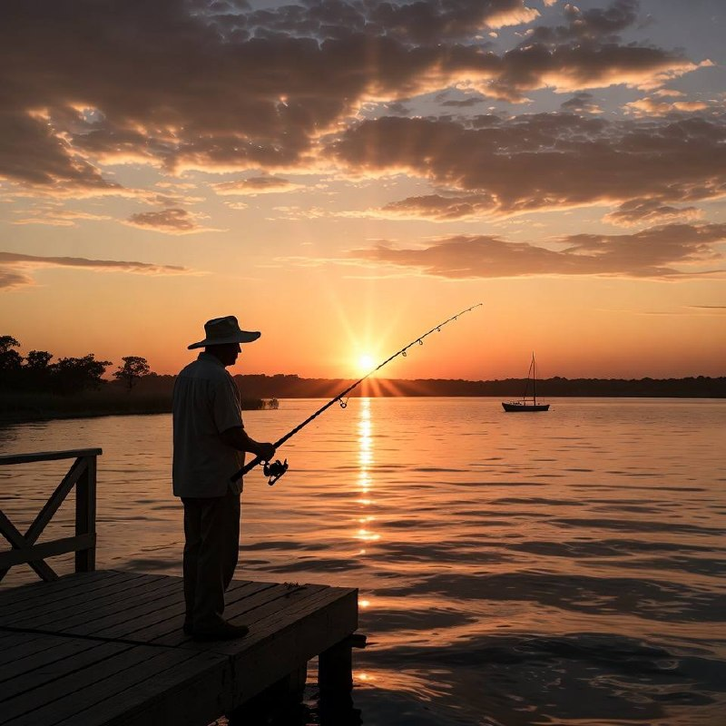
Winter Camping for Beginners: Gear That Won’t Kill You (or Your Wallet)
Learn what gear beginners actually need for safe and comfortable winter camping without expensive premium equipment....
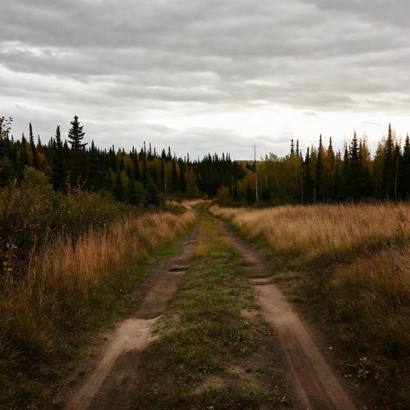
Sitka vs. Kuiu vs. First Lite: Which Hunting Brand Is Worth Your Money?
Detailed comparison of three premium hunting apparel brands to help you choose based on hunting style and budget....
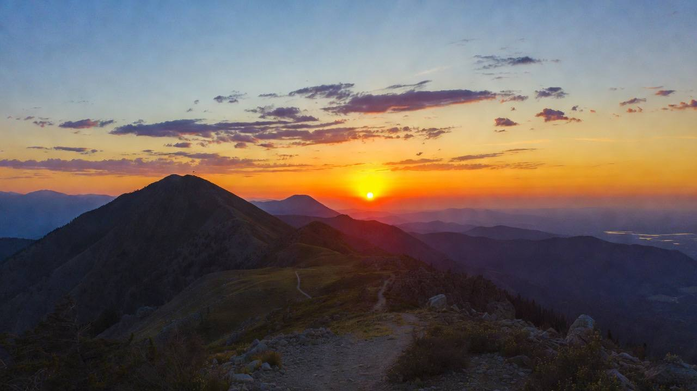
Garmin vs. OnX: Which GPS System Should Canadian Hunters Use?
Compare standalone Garmin GPS devices with OnX Hunt app for navigation, features, and battery life in remote hunting areas....
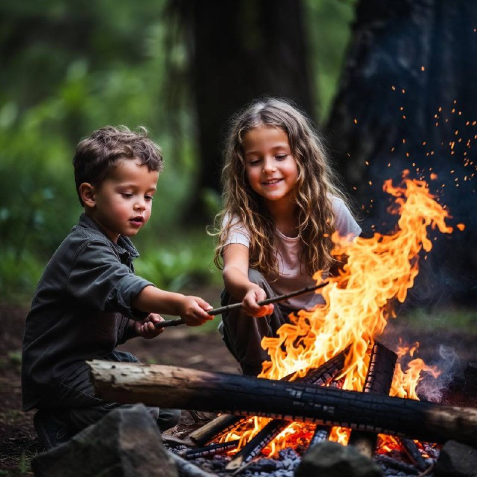
Soft Coolers vs. Hard Coolers for Fishing: 72-Hour Ice Test
72-hour ice retention testing reveals which cooler type keeps your catch fresh longest for day trips and multi-day fishing....
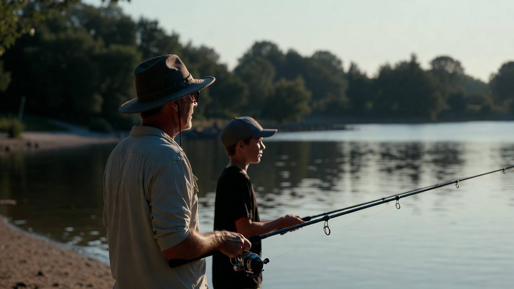
$500 Hunting Starter Kit: The Complete Setup for New Hunters
Build a complete, functional hunting setup for under $500 with essential gear for new hunters....
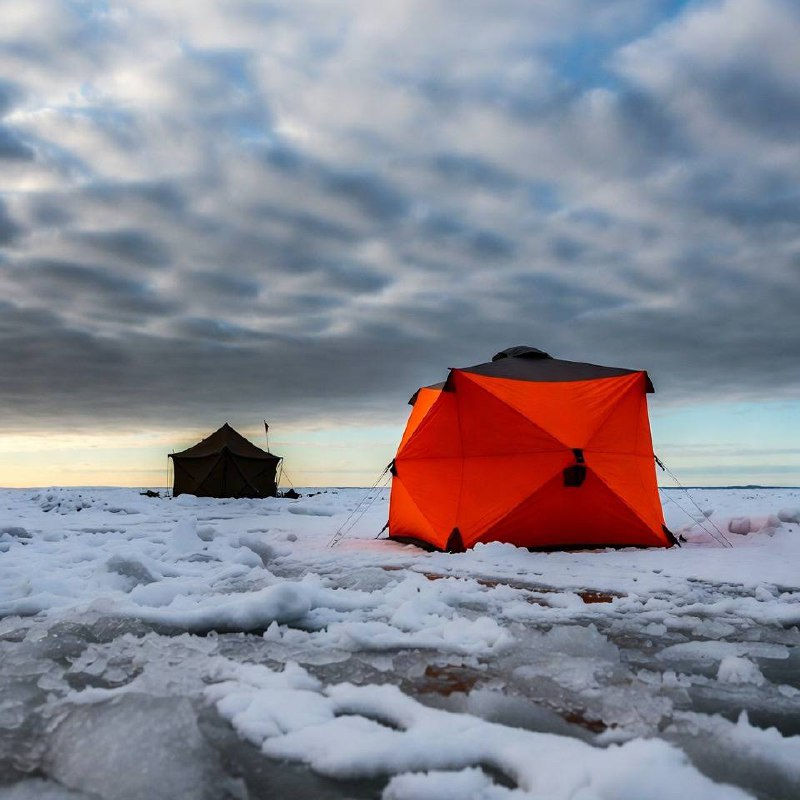
Your First Fishing Rod: A Buyer’s Guide for Beginners
Learn how to choose your first fishing rod with practical advice on rod action, power, length, and matching to target species....
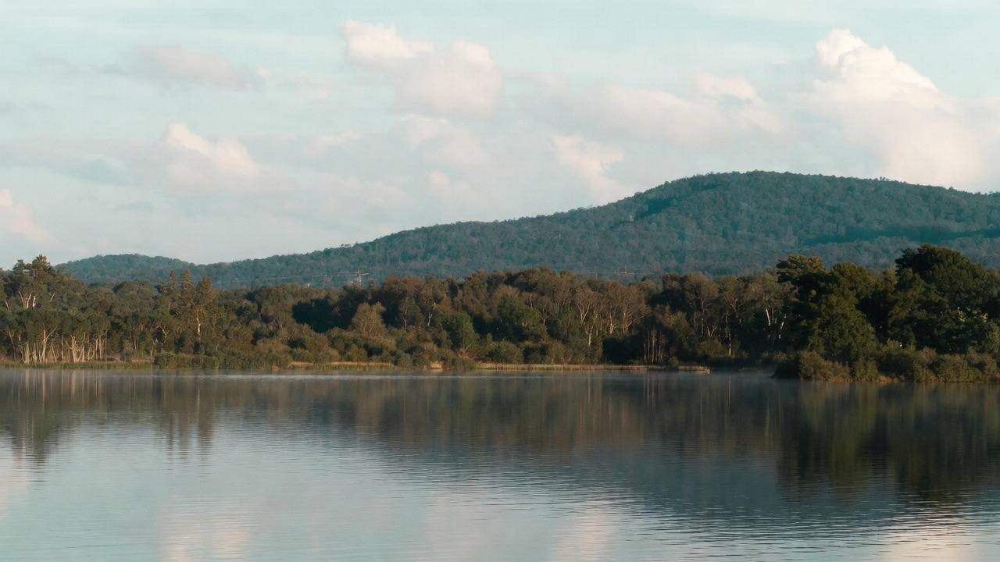
Car Camping Essentials: The 20 Items You Actually Need
Complete checklist of 20 essential items for comfortable and safe car camping, from sleep systems to cooking to safety gear....